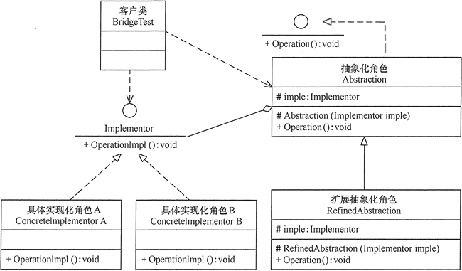

# 桥接模式（Bridge）
概述：桥接模式，即将两个不同的对象组合在一起，而不是一个对象继承所有接口。比如手机，咱有电池有显示器有主板，一种实现方式是让手机继承所有这些接口，那自然是不合理的，因为这不方便我们改造这个对象的零部件，但如果是做成手机这个抽象类里面有电池主板等的抽象实例，那就可以很方便地分开设计每个不同零部件的功能了
# 特点：
- 由多个抽象接口，一个抽象类组成抽象层
- 将多个不同功能的部件组合到一起形成功能更丰富的抽象类
# 优缺点：
优点：
- 在不继承过多接口的情况下扩展功能，可扩展性强
- 符合开闭原则，支持抽象类的定制服务
缺点:
- 需要移除抽象类的某个部件时，将会导致之前创建的具体类全部无法使用。如果要保持原有具体类可以继续被使用，则需要再加一层抽象类的抽象接口，使其实现多态。或者保持原有类，另起一个新类来移除部件，但这显然是不明智的，因为你不知道什么时候是否又要对类进行修改，这将导致没有关联的废弃类越来越多。
# 应用场景：
- 抽象类有多个组件组成时考虑使用，以增加系统的灵活性
# 桥接模式的结构与实现
桥接模式的结构

桥接模式的实现
桥接模式（例子：手机由电池，显示器，CPU 组成，这些都有不同厂家提供）代码如下：
Bridge 1
2
3
4
5
6
7
8
9
10
11
12
13
14
15
16
17
18
19
20
21
22
23
24
25
26
27
28
29
30
31
32
33
34
35
36
37
38
39
40
41
42
43
44
45
46
47
48
49
50
51
52
53
54
55
56
57
58
59
60
61
62
63
64
65
66
67
68
69
70
71
72
73
74
75
76
77
78
79
80
81
82
83//抽象类 电池
struct Battery {
virtual void PowerSupply() = 0;
};
struct Battery_1 : Battery {
void PowerSupply() {
cout << "Supplling Power!" << endl;
};
};
//抽象类 显示器
struct Monitor {
virtual void Display() = 0;
};
struct Monitor_1 : Monitor {
void Display() {
cout << "Displaying！" << endl;
};
};
//抽象类 CPU
struct CPU {
virtual void Calculate() = 0;
};
struct CPU_1 : CPU {
virtual void Calculate() {
cout << "Calculating！" << endl;
}
};
//抽象接口 手机
struct MobileInterface{
virtual void call() = 0;
};
//抽象类 手机，继承自抽象接口，方便对抽象类的修改
class Mobile : MobileInterface{
protected:
Battery* battery;
Monitor* monitor;
CPU* cpu;
public:
Mobile() {};
virtual void PlayGame() {
battery->PowerSupply();
cpu->Calculate();
monitor->Display();
}
virtual void call() {
cout << "calling" << endl;
}
virtual ~Mobile() {}
};
//实现类 手机，继承抽象类
class Iphone_1 :public Mobile {
public:
Iphone_1(Battery* b, Monitor* m, CPU* c){
battery = b;
monitor = m;
cpu = c;
}
~Iphone_1() {};
};
int main() {
Battery_1* b1 = new Battery_1();
Monitor_1* m1 = new Monitor_1();
CPU_1* c1 = new CPU_1();
//用上面的组件做一个手机，来玩游戏
Mobile* mobile = new Iphone_1(b1, m1, c1);
mobile->PlayGame();
delete mobile;
}
//运行结果:
//Supplling Power!
//Calculating！
//Displaying！
结语：显然桥接模式是为了更好的组合，扩展抽象类的功能的设计模式
参考文献：
- 《设计模式：可复用面向对象软件的基础》